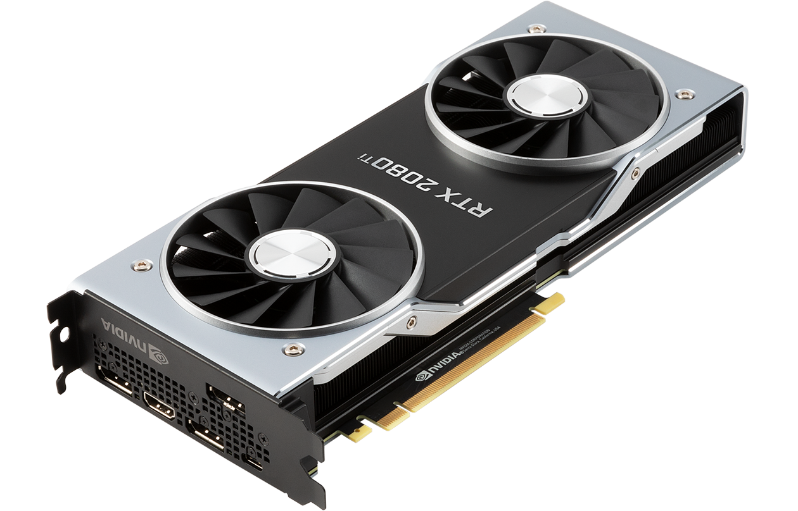
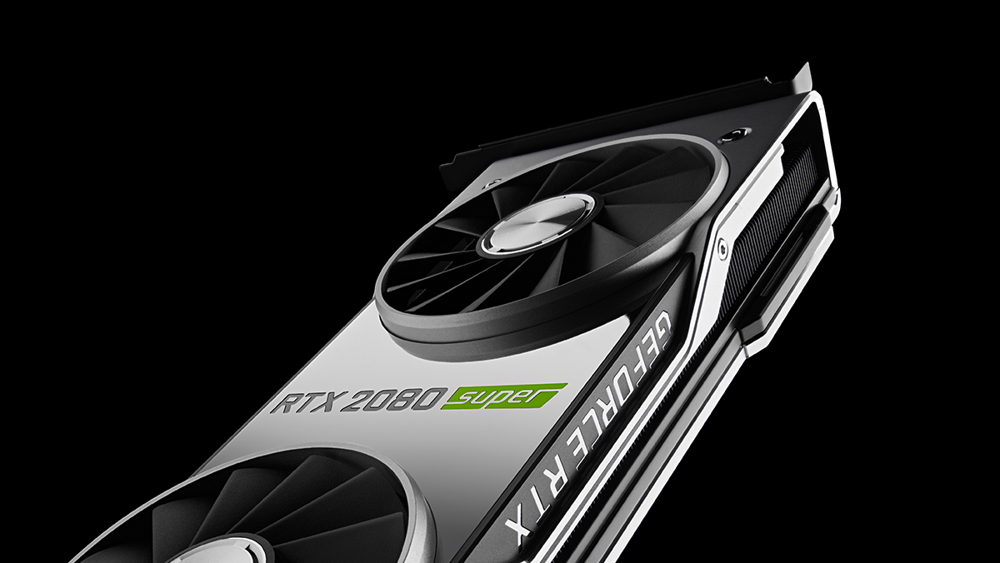
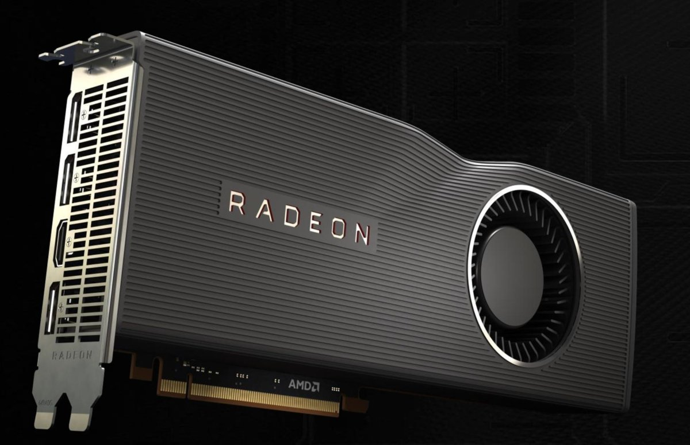
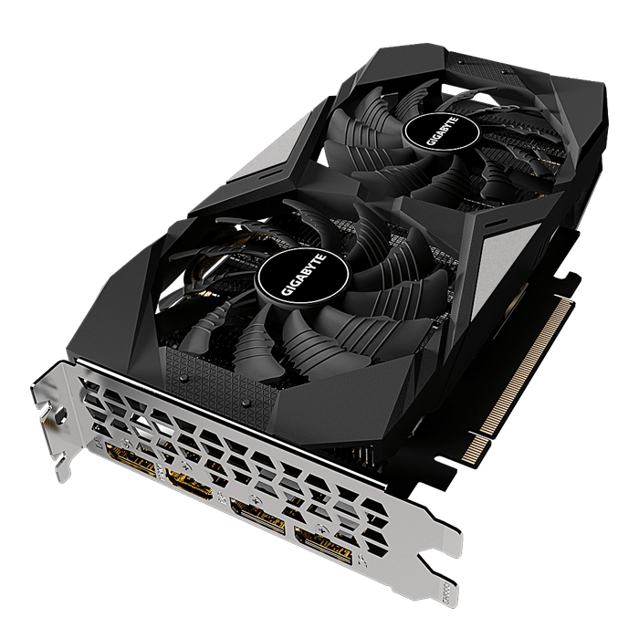
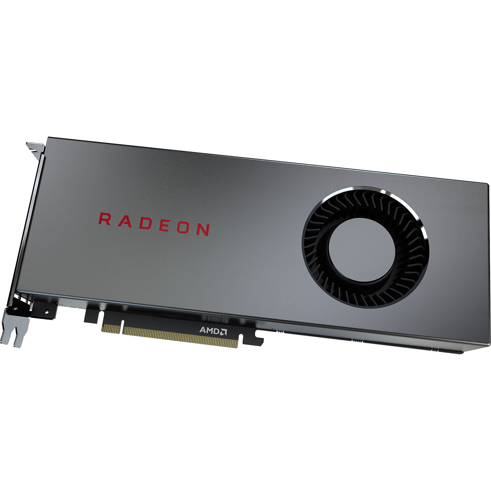

What are this year's best graphics cards?
For anybody that plays video games, an amazing graphics card is a must! This piece of hardware is an extermely important aspect in a computer when looking for good quality on your screen. This year, there were many great graphics cards that were released with many amazing specs to them too. These are a few of this year's best graphics cards!
- Nvidia GeForce RTX 2080 Ti
- 
- Specs: GPU Cores: 4,352 | Base Clock: 1,350MHz | Boost Clock: 1,545MHz | GFLOPS: 13,448 | Memory: 11GB GDDR6 | Memory Clock: 14 GT/s | Memory Bandwidth: 616GB/s
-
Of course the first one to be mentioned here is the latest graphics card. This card is by far the fastest on the market, though it is one of the more expensive ones on the market.
The cheapest one you can get starts at $999, and the more expensive ones usually sell for $1,200 or more. The RTX 2080 Ti is capable of running video games at 4k 144 Hz quality with no
problem at all. Although, for the average gamer, this card is not recommended unless they were to do something with graphical design that will use the card to its full extent.
-
There is also one issue with this card when it comes to running video games on this card. That being the card supports ray tracing, most games do not support this.
Though in the near future this won't be much of an issue anymore as video game developers are starting to implement this into their games, such as newer titles like
Call of Duty Modern Warfare and Cyberpunk 2077.
- Nvidia GeForce RTX 2080 Super
- 
- Specs: GPU Cores: 3,072 | Base Clock: 1,650MHz | Boost Clock: 1,815MHz | GFLOPS: 11,151 | Memory: 8GB GDDR6 | Memory Clock: 15.5 GT/s | Memory Bandwidth: 496GB/s
-
The RTX 2080 Ti is the second fastest consumer GPU in the market and for only half the price of the RTX 2080 Ti previously discussed. This card does share some of the same
qualities as the RTX 2080 Ti such as the support of ray tracing. It also delivers great 1440p quality to your monitor as well as great 4k quality, though the 4k quality won't
look as good as it does on the 2080 Ti. Despite this, the card will still be able to deliver far more than enough frames to be able to play a game smoothly while running at
4k quality. Overall, this is a very good and fairly reasonably priced card for you if you don't want to commit to paying top dollar for the 2080 Ti!
- AMD Radeon RX 5700 XT
- 
- Specs: GPU Cores: 2,560 | Base Clock: 1,605MHz | Boost Clock: 1,905MHz | GFLOPS: 9,754 | Memory: 8GB GDDR6 | Memory Clock: 14 GT/s | Memory Bandwidth: 448GB/s
-
If you're looking for a cheaper upgrade for your graphics card, then this one is for you. Unlike any of the previous discussed graphics cards, this one does not support ray
tracing. Despite that very small flaw, this card outperforms the Nvidia GeForce 2060 RTX Super in terms of sheer in-game performance for the same price.
- GeForce GTX 1660 Super 6GB
- 
- Specs: GPU Cores: 1,280 | Base Clock: 1,530MHz | Boost Clock: 1,785MHz | GFLOPS: 5,027 | Memory: 6GB GDDR6 | Memory Clock: 14 GT/s | Memory Bandwidth: 336GB/s
-
This card is one of the cheaper ones released as it goes for a little less than $300, though it is one of the best within this price range. The 1660 super is a good card for
those who are looking to build a budget PC and are wanting to save money. One downside to this card is that unlike the newer Nvidia RTX cards, it doesn't support ray tracing.
Although that wouldn't be important to someone who is building a budget PC. This card is definitely a good purchase if you want to save a little money.
- AMD Radeon RX 5700
- 
- Specs: GPU Cores: 2,304 | Base Clock: 1,465MHz | Boost Clock: 1,725MHz | GFLOPS: 7,949 | Memory: 8GB GDDR6 | Memory Clock: 14 GT/s | Memory Bandwidth: 448GB/s
- The 5700 has a reasonable price tag to it ($349) and exceeds the performance of the vanilla 2060 released by Nvidia by a 10% margin. Though this card doesn't offer the marquee features that the Nvidia cards do, such as ray tracing or DLSS support, it does beat the competing cards with this price tag with its base performance.